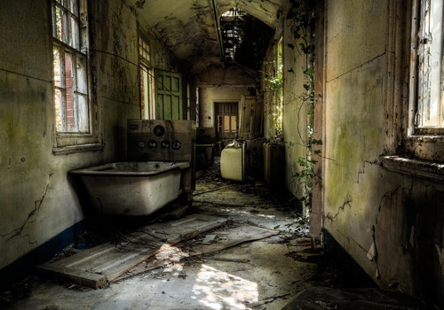
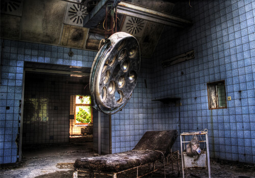
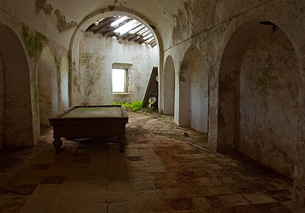
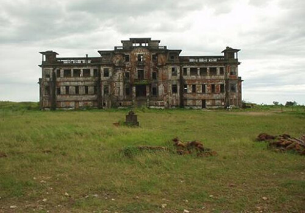
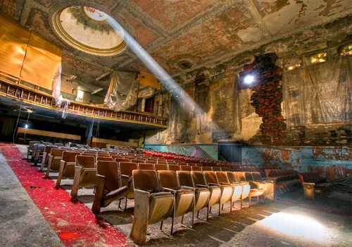
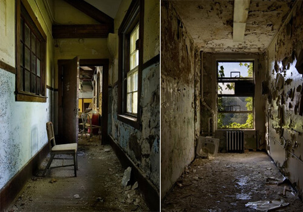

NEW

Amplios pasillos venecianos
La residencia, de estilo veneciano,
dispone de amplios pasillos que disponen de todo lo necesario,
desde una elegante bañera de Felipo II hasta una cuidada decoración
del techo y paredes de estilo neobarraco.
50% dto

Modernas instalaciones sanitarias
La mansión dispone de las más modernas instalaciones
sanitarias, incluso un exclusivo quirófano dotado de
las más altas prestaciones, donde cualquiera quisiera
poder disfrutar en caso de necesidad.
SIN GTOS

Sala de juegos totalmente equipada
Espacioso salón de juego donde disponemos de una esplendorosa
mesa de billar sin palos, ni bolas ni agujeros, pero donde
podrá poner a prueba su gran imaginación para dibujar el
resultado mental que desee.

Exclusivo entorno natural
La mansión está rodeada de un entorno natural envidiable,
dominado por el verde de la naturaleza y el turquesa de la
majetuosa mansión veneciana que corona este idílico paraje
natural repleto de simpáticos topos y ratoncitos.
OFERTÓN

Gran salón de actos
La joya de la corona reside en una enorme sala de reuniones,
teatro o salón para celebrar actos de las más altas esferas.
Acústica envidiable por el boquete no natural del techo y dotado
de todos los cascos de obras reglamentarios.
NEW

Decoración veneciana original
Todos los pasillos y salas de la mansión están lujosamente
decorados y obsequiados con detalles venecianos originales de
Giovanni Bordiga de 1926 inspirados en el Palacio gótico de
Ca'Foscari de 1868 de Venecia.